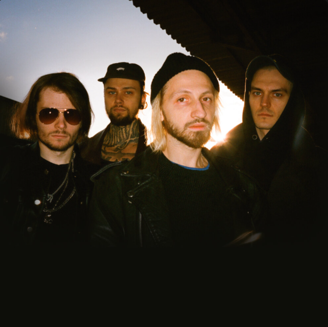

Нервы
«Нервы» — украинская поп-рок-группа, основанная Евгением Мильковским в 2010 году в Киеве. Состав группы: Евгений Мильковский (вокал, гитара), Роман Булахов (соло-гитара, бэк-вокал), Алексей Бочкарёв (ударные), Дмитрий Клочков (бас-гитара, бэк-вокал).
История Группы
Дебют — 5 марта 2011 года, когда музыканты выпустили клип на песню «Батареи». В мае 2012 года вышел дебютный альбом группы — «Всё, что вокруг». Затем коллектив отправился в большой тур по странам СНГ, провёл около 90 концертов и был номинирован на премию MTV Europe Music Awards в категории «Лучший российский исполнитель». В 2022 году рок-коллектив покинул Россию в связи с ситуацией на Украине. Участники группы закрыли кофейню в Москве, а также прекратили сотрудничество с лейблом «Navigator Records».